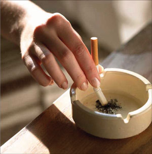

Lost and Conservative? Opportunities Abound at Stanford
In 2004, novelist Tom Wolfe penned the novel I am Charlotte Simmons, lambasting the binge drinking, sexually promiscuous, image-oriented culture of the typical American college campus. Wolfe loosely based the novel’s fictional DuPont University on research he conducted at top-tier universities across the country, including Stanford. When Wolfe returned to the Bay Area later the same year, however, he admitted that few of the novel’s worst depictions of hedonistic valueless co-eds were actually drawn from Stanford: “It was a little too nice,” he told the San Jose Mercury News, adding, “There was nothing going wrong enough to satisfy my mission.”
Romney in Best Shape for GOP Nod
The first presidential election in fifty-six years without an incumbent president or vice president on the ballot has surprised politicos and challenged conventional wisdom, seemingly at every turn. No one expected the implosion of Arizona Sen. John McCain’s campaign, with its structural shake-ups and dives in both fundraising and poll numbers. The Democratic Party, which prides itself in its traditional infighting and refusal to nominate the establishment candidate in presidential contests, has solidified its support for New York Sen. Hillary Clinton, who leads Illinois Sen. Barack Obama by as many as twenty points in some national polls. Yet despite other recent events, there are still those who continue to cling to the old conventional wisdom and deny that former Massachusetts Gov. Mitt Romney, who would be the first non-Protestant or non-Catholic to win a presidential nomination by either major political party, currently stands in the best position to clinch the Republican nod.
Winning an Asymmetrical War
The Second World War is thought of as a conventional conflict in which the world’s great powers threw like against like—tanks against tanks, planes against planes. However, not every theater of the war can be so easily classified. In particular, the Battle of the Atlantic, waged between the Allies and Germany, was an asymmetrical conflict. The German U-boat force, the centerpiece of that country’s naval power, could not come close to matching the size and stature of the Allied navies.
Power Corrupts in Beijing
Beijing’s preparation for the Olympics is a double-sided story: China has made great economic strides over the past two decades, allowing unprecedented individual freedom to participate and compete in relatively free markets; but China’s leadership shows no inclination to tolerate similar individual freedom and participation in politics.
|

News Analysis: Smoking in Stanford
Stanford introduced two anti-smoking policies during the summer holidays, both effective as of September 1. First, the School of Medicine has banned outdoor smoking. Second, the Stanford Benefits and the Health Improvement Program (HIP) has introduced the “Quit Tobacco Program” for faculty and staff.
Editor's Note
As we arrive on and return to campus, and as we usher in another year at Stanford, it seems appropriate to offer a restatement of what the Stanford Review is, and what it is not. There is some risk of the Review acquiring an identity that is not its own, and it seems the best way to avoid that outcome is to consider the Review’s purpose.
Unique Take on Chinese Cuisine in Downtown Palo Alto
The culinary culture of the Bay Area has been greatly influenced by the Chinese ever since the first large wave of immigrants arrived in the mid-nineteenth century as gold miners and laborers for the Transcontinental Railroad. The Americans who worked with them commented on their strongly flavored dishes and the peculiar emphasis they placed on food in daily life. While their white counterparts asked for little more than beef, potatoes and whiskey for their food rations, the Chinese requested a variety of fresh vegetables and seafood, and even designated certain people as chefs who not only cooked the meals, but kept pens of chickens and pigs and collected ingredients from the Chinatowns of San Francisco and Sacramento that were growing at a rapid rate.
Olympics to Showcase a Changing China
Flashing lights, giant signs, and elaborate displays now adorn the once-drab streets of China’s capital city. Digitized concrete billboards stand nearly fifteen feet tall at major intersections, screaming in bright lights the number of days, hours and minutes until the event that will place China at the center of global media attention. With less than a year left to the Beijing games, the 2008 Olympics have the entire city abuzz with excitement, from its political leaders to everyday citizens. As for the hoards of aggressive peddlers that line the crowded sidewalks of this bustling city, their ware of choice no longer seems to be Great Wall postcards or Chairman Mao statues, but an extensive array of Olympic-related paraphernalia from stuffed animals to camera cases, all prominently displaying the 2008 logo. Having made leaps and bounds in its population’s standard of living in the last quarter century, China is eager to display its progress and new status as world power, and the Olympics provide the perfect opportunity to do so.
|